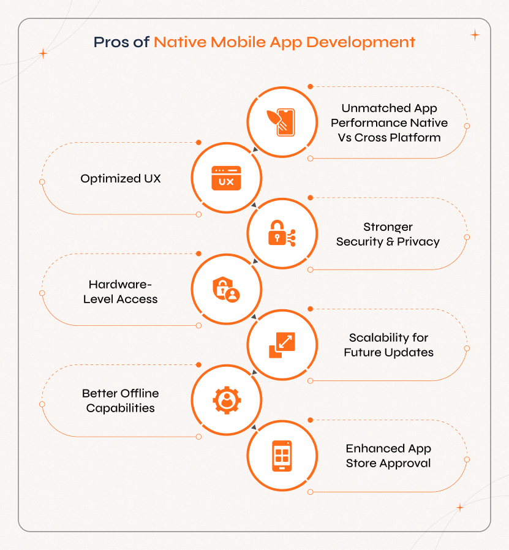
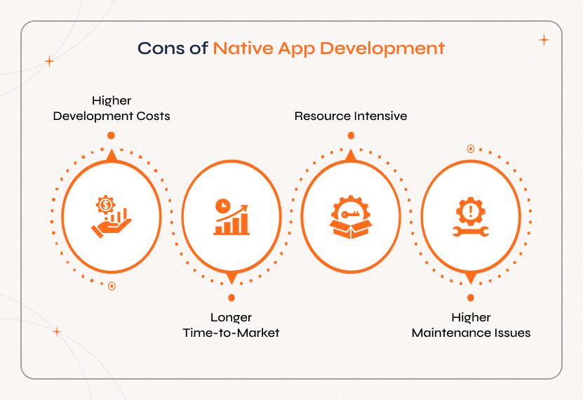
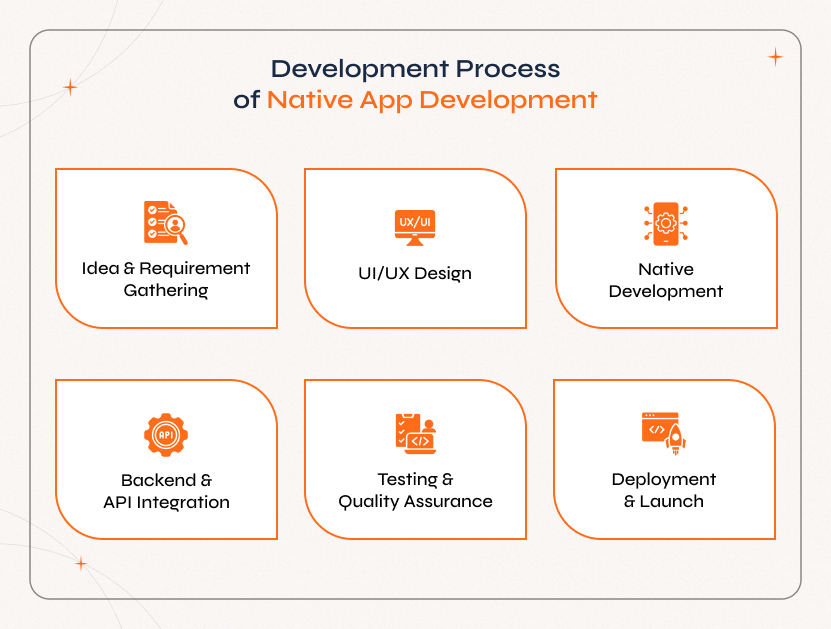
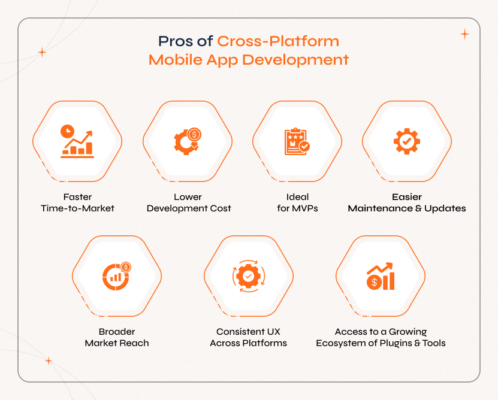
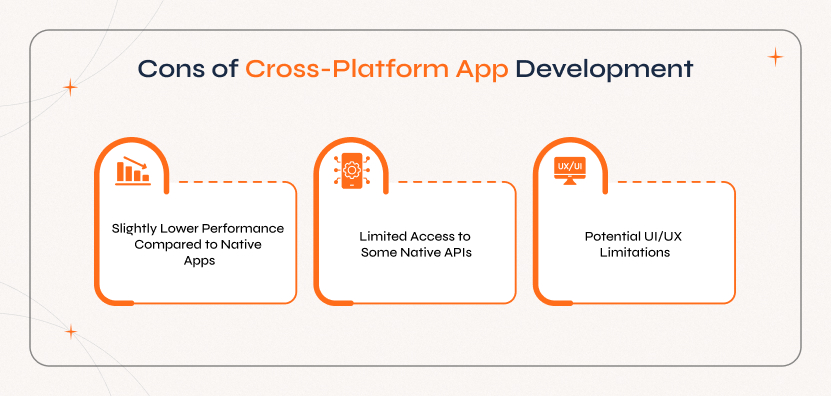
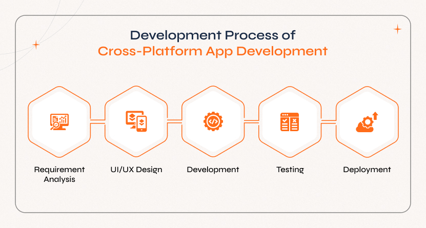
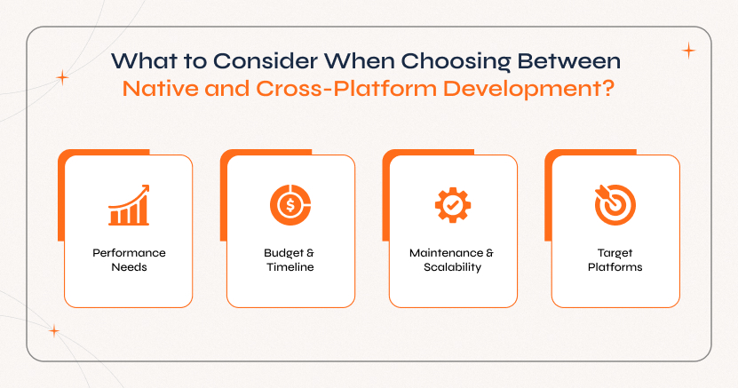

Studies show over 90% of mobile users across the globe are spending most of their time on apps rather than websites. And in the current digital-first world, mobile apps are undoubtedly becoming an essential entity for business growth. If you are planning to build one, your very first decision is to consider between native vs cross-platform development. Choosing between these approaches will make or break your app's performance, budget, and launch speed.
In this guide, you will get to know both approaches in simpler terms, along with their pros and cons, real costs, performance stats, etc. At the end of this blog, you will get to know which one to choose that matches your business goals. Whether you are launching your first MVP or scaling an enterprise product, you will find out which path to take in 2025.
What is Native App Development?
Native app development involves the process of building apps for one operating system, such as iOS (Swift/Objective-C) or Android (Kotlin/Java). The term native mobile apps means they are developed to run directly on a device's operating system and hence ensure to deliver users unmatched speed, performance, and extended hardware integration support.
Since native apps are designed to be platform-specific, they can take full advantage of device features like the microphone, GPS, camera, and push notifications.
Pros of Native Mobile App Development
Native apps work best in their kind when it comes to performance-sensitive categories. As per Itransition, 79% of top-performing mobile games and high-traffic generating apps are built natively for iOS or Android. Their platform-specific design and direct OS integration offer them the advantages of speed, security, and scalability.

1. Unmatched App Performance Native Vs Cross Platform
Native apps are
capable of being directly compiled into machine code. As they need not rely on
intermediate layers, they deliver faster load times, smoother animations, and
minimal crashes.
2. Optimized UX
Design elements and UI components of native apps are
tailored to each platform. They follow platform-specific UI guidelines and ensure a
familiar & more intuitive experience for the users.
3. Stronger Security & Privacy
Native apps have more benefits as they
offer built-in OS security features and robust data protection, thus making them
harder to breach and more compliant with privacy regulations.
4. Hardware-Level Access
By offering direct access to device hardware
like GPS, Bluetooth, sensors, NFC, etc., native apps deliver advanced features like
AR/VR, IoT integration, and biometric authentication.
5. Scalability for Future Updates
Native codebases will adapt to new OS
releases, hardware advancements, and SDK updates. This allows adding cutting-edge
features like spatial computing or new AI APIs.
6. Better Offline Capabilities
As native apps work closely with the OS,
they can take up offline data storage, local processing, and background sync
efficiently.
7. Enhanced App Store Approval
Native apps that are
better optimized tend to meet App Store and Google Play Store guidelines easily and
face fewer rejection risks. They get featured on the app store faster due to their
UX quality, performance, and security features. This, in turn, leads to faster and
better discoverability.
Cons of Native App Development
Undoubtedly, native app development offers top-tier performance and user experience. But that doesn't mean it doesn't come with negative aspects. It is essential to know the trade-offs in cost, time, and resources for any startup or business looking for rapid, budget-friendly launches.

1. Higher Development Costs
It is vital to hire platform-specific
developers to develop separate codebases for iOS and Android. This results in
double the development and maintenance cost for the company.
2. Longer Time-to-Market
Building, testing, and debugging processes for
each platform differ, and thus native app development takes about 1.5 to 2X longer
than cross-platform approaches. Thus, you can expect a short delay in launching.
3. Resource Intensive
Native projects are more demanding and take up
company resources as managing two separate codebases involves larger, expert teams
along with additional project management overhead.
4. Higher Maintenance Issues
It is definitely a
time-consuming task when it comes to providing separate OS updates, SDK changes, and
device variations. This especially applies to businesses without a large in-house
development team.
Development Process of Native App Development
The process of building a native mobile app follows a structured approach that covers everything from initial concept development to app store launch. Each step is designed for a specific operating system while improving performance, security, and user experience to deliver optimal results.

1. Step 1 - Idea & Requirement Gathering
This is the step that sets the
foundation for the entire project. It involves defining the scope of the app, target
audience, key features, and preferred platform, either iOS or Android.
2. Step 2 - UI/UX Design
For a seamless user experience, it is vital to
create platform-specific wireframes, prototypes, and design elements that follow
Apple's Human Guidelines or Google's Material Design principles.
3. Step 3 - Native Development
This step deals with building the app
using native programming languages, either Swift or Objective-C for iOS, and Kotlin
or Java for Android to ensure maximum performance and OS compatibility.
4. Step 4 - Backend & API Integration
Now, the app development company
will develop or connect to backend systems, databases, and third-party APIs to power
the app's functionality, authentication, and data processing.
5. Step 5 - Testing & Quality Assurance
Once integration is done, it is
essential to run functional, performance, usability, and security tests on multiple
devices to make sure the app is free from bugs, runs stable, and offers a secure
experience to the user.
6. Step 6 - Deployment & Launch
The final step is to submit the app to
the Apple App Store or Google Play Store while ensuring compliance with all the
guidelines for approval and smooth release.
From idea to app store launch, we handle the entire native app development process with precision and expertise.
All That You Need to Know About the Development Cost of Native Apps
As mentioned earlier, the development cost of native apps is generally higher because it is vital to build and maintain separate codebases for iOS and Android. Besides, this approach requires hiring specialized developers with expertise in each platform. This, in turn, increases the initial development and long-term maintenance expenses.
- A Minimum Viable Product (MVP) costs between $25,000-$50,000.
- Enterprise-Level Apps start at $80,000 and above.
For those companies where budget and launch speed are a concern, consider opting for MVP development services from a trusted software app development company like Sparkout. This way, you can release a streamlined, high-quality version of your app at a faster rate. Above all, you will still have a strong technical foundation that is scalable for future updates and feature expansions.
Real World Examples of Native Apps
There are lots of popular apps available in the market designed using the native mobile app development approach. Hence, we are experiencing exceptional performance, reliability, and user engagement. Some of the most popular native apps used across the globe by audiences of all types include:
1. Instagram It is built natively and handles high-resolution images, videos, and real-time interaction. Thus, it comes with very minimal lags and ensures a smooth social media experience.
2. Spotify By using native development, it offers seamless music streaming, offline playback support, and faster navigation between tracks and playlists.
3. WhatsApp It uses native architecture and offers secure, end-to-end encrypted messaging, real-time calls, and efficient background data syncing.
All these apps are proof of high-performing & high-engagement platforms. They have chosen the native approach to ensure faster delivery, stability, better multimedia handling, and user experience.
What is a Cross-Platform App Development Approach?
Cross-platform app development is nothing but the process that involves building mobile applications that work seamlessly across multiple operating systems, iOS and Android, using a single shared codebase. Unlike native development, cross-platform app development doesn't involve creating separate apps for each platform. Instead, the developers write one code that runs on all the platforms using cross-platform frameworks.
Some of the popular frameworks include React Native cross-platform and Flutter. They act as a bridge between your shared code and the device's native components. React Native uses JavaScript to communicate with native modules, whereas Flutter compiles to native code using its own rendering engine. Thus, cross-platform ensures to deliver near-native performance.
This way, native cross-platform app development uses the efficiency of shared coding and native device features to build cross-platform native mobile applications. This balance ensures better performance, development speed, and cost.
Pros of Cross-Platform Mobile App Development
The cross platform software development approach lets you build one app that works on different devices and platforms. This approach not just saves time but also money and resources while reaching more users instantly. The key benefits include:

1. Faster Time-to-Market
It uses a single codebase for multiple platforms
that will speed up the development and launch timelines. Thus, the cross platform
mobile apps help businesses reach users instantly.
2. Lower Development Cost
Cross-platform development involves a unified
development team with expert developers who build and maintain apps for both iOS and
Android. This way, it reduces the expenses compared to managing separate native
teams.
3. Ideal for MVPs
Cross-platform development is perfect to validate your
app idea quickly, as it supports delivering a minimum viable product before
committing to more costly native builds.
4. Easier Maintenance & Updates
With one shared codebase, bug fixes and
feature updates need to be applied only once, which will be automatically rolled out
across all the platforms.
5. Broader Market Reach
It is possible to deploy your app on Android,
iOS, and even on browsers as a web app development with very minimal additional
effort. This way, cross-platform app development helps maximize your audience
potential.
6. Consistent UX Across Platforms
Cross-platform frameworks ensure your
app looks and feels similar on all devices. This way, businesses can maintain brand
consistency.
7. Access to a Growing Ecosystem of Plugins & Tools
Popular frameworks like React Native and Flutter provide support for rich libraries
and plugins. This accelerates the development cycle and provides native-like
features.
Cons of Cross-Platform App Development
Cross-platform apps are easy and cheaper to build. However, it does come with a few cons, like it can be a bit slow, have trouble using some device features, and may not look or feel just like the apps made for one platform.

1. Slightly Lower Performance Compared to Native Apps
Cross-platform apps
work on an additional framework layer, and this may bring in some lag. At the same
time, this takes up device resources, which affects the speed and responsiveness,
especially in graphics-intensive applications.
2. Limited Access to Some Native APIs
Although React Native and Flutter
frameworks cover most of the device features, certain advanced or newly released
native APIs may not be immediately available. In other words, this requires custom
native modules or complex workarounds.
3. Potential UI/UX Limitations
Cross-platform apps
aim to provide similar design across platforms. However, they may not completely
match due to the unique UI/UX conventions of each platform. As a result, users may
get a less native feel.
Development Process of Cross-Platform App Development
Building a cross-platform app means creating one app using a single codebase that runs on different OS like iOS & Android. By following a step-by-step approach, the app will work smoothly, look good, and meet the requirements of the target audience.

This is the planning stage in which you need to define your app's goals and target platforms in a clear way. You should decide which devices and operating systems your app should work on. This is the stage in which you should also list the core features, expected user experience, and technical requirements to make sure the app works well.
As the app is expected to work on different devices, it is vital to keep the design flexible and responsive. Designers have to create layouts, colour schemes, and navigation processes in such a way that it works on different sizes and orientations. The goal is to ensure the app feels natural and easy to use, irrespective of whether the user is on an iPhone, Android phone, or tablet.
Developers use cross-platform frameworks like React Native, Flutter, and Xamarin to write code. These tools allow them to build one set of code that will work on different platforms. This way, developers need not develop separate versions for each platform. Upon optimizing the code, the app will run smoothly while supporting features like push notifications, GPS, camera access, and offline capabilities.
To ensure the app works smoothly, testing is done on multiple devices and platforms. This includes checking the speed, security, stability, and ease of use. Bugs or compatibility issues will be fixed before the app goes live, and this way, developers avoid bad user experiences.
When the testing phase is completed, the app is all set to be released. The best part about cross-platform development is that it supports publishing on the Apple App Store and Google Play Store from a single codebase. Thus, this approach saves time and effort while allowing your app to reach users across platforms quickly.
Every Platform Faster
Leverage our expertise in cross-platform app development to maximize reach and minimize costs with a single, powerful codebase.
Development Cost of Cross-Platform Apps
The cost of building a cross-platform app is generally lower when compared to native app development. It is because this approach requires creating and maintaining one codebase for multiple platforms.
- A minimum viable product (MVP) or the basic version of the app ranges from $15,000–$30,000.
- A fully featured app costs between $40,000–$70,000 and covers all the planned features, custom design, higher scalability, and advanced integration.
As the same code works on both iOS, Android, and sometimes on the desktop platform, cross-platform software development seems to be the most cost-effective choice among start-ups and small businesses. This not only saves on initial development but also on ongoing maintenance and updates.
Real-World Examples of Cross-Platform Apps
There are several leading brands using the cross-platform app development approach to build apps that speed up delivery, reduce costs, and offer a consistent user experience across devices. This includes:
1. Facebook - It uses React Native to combine its iOS and Android codebase, thus offering faster feature rollouts and consistent functionality on all platforms.
2. Airbnb - It initially adopted React Native to speed up development and deliver updates on both platforms at the same time, thus ensuring faster time-to-market.
3. Alibaba - It uses cross-platform frameworks and offers a uniform shopping experience to millions of users globally, irrespective of the device or OS they are on.
These examples show how cross-platform development can be a smart choice for businesses looking for faster deployment, lower costs, and wider reach without sacrificing quality.
What to Consider When Choosing Between Native and Cross-Platform Development?
When deciding between native or cross-platform development approaches, there are certain things to consider beyond the upfront cost. Several factors will directly impact your app's performance, scalability, and overall success.

1. Performance Needs
If you need your app with high processing power,
advanced graphics, and real-time interactions, the native development approach is
great to choose. This is because native apps are optimized for the device's hardware
and operating system and work faster and smoother.
2. Budget & Timeline
If your deadline is short or you have a smaller
budget, then the cross-platform development approach works great, as it offers a
faster and more affordable path. You can build once and launch on multiple
platforms, which in turn saves time and money compared to creating two separate
native apps.
3. Maintenance & Scalability
If you are considering long-term support
costs, then native apps require separate updates, bug fixes, and testing for each
platform. This increases the overall expenses. Cross-platform apps, on the other
hand, use a shared codebase, making ongoing maintenance more cost-efficient.
4. Target Platforms
If you want your app to work
only on one operating system, say iOS or just Android, then native development is
more efficient. However, if you want to reach more audiences across multiple
platforms at once, then cross-platform development gives you a wider reach with
minimal effort.
Who Can Consider Between Native App Vs Hybrid App Development Approach?
In some cases, there exists a requirement for both, and thus a hybrid approach works better. For instance:
You can choose to build most of the app using cross-platform tools for cost efficiency and develop performance-critical features like AR/VR, 3D game engines, etc., using the native approach.
This hybrid approach gives you the speed and cost benefits of cross-platform development while still delivering native-level performance where it is required.
Native App Development vs Cross Platform App Development: Which One Fits Your Business?
Choosing between native and cross-platform development varies based on performance, cost, and time-to-market. This comparison table breaks down the difference between native and cross platform development to help you decide which approach best fits your business goals in 2025.
| Feature | Native App Development | Best For | Cross-Platform App Development | Best For |
|---|---|---|---|---|
| Performance | Exceptional. Works directly on the OS for maximum speed & stability. | High-performance apps like games, AR/VR, video editing. | Very Good – 85–95% of native speed using modern frameworks. | General business apps, MVPs & moderate-performance needs. |
| Development Cost | Higher. Separate codebases for iOS & Android. | Enterprises, funded startups. | Lower. Single codebase for multiple platforms. | Startups, budget-conscious projects. |
| Time-to-Market | Slower. Two teams, more coding/testing. | Products where quality > speed. | Faster. One codebase, fewer resources needed. | MVPs, quick launches & early market validation. |
| UI/UX Quality | Pixel-perfect, platform-specific design. | Apps requiring premium UX. | Consistent look across platforms, slightly less tailored. | Multi-device apps where consistency matters. |
| Access to Device Features | Full hardware & OS-level access. | Apps need advanced device integration. | Partial. Some features need plugins/native modules. | Standard apps without complex hardware needs. |
| Maintenance & Updates | Updates must be done separately for each platform. | Apps with unique features per OS. | A single update applies everywhere. | SaaS apps, apps with frequent updates. |
Why Choose Sparkout for Native or Cross-Platform Development?
Choosing the right software app development company is as important as choosing the right technology. Get to know why businesses trust us for both native and cross-platform solutions:
1. Expertise in Both Approaches
Our team includes seasoned native app
developers and cross-platform specialists. So, we can take up either of the projects
and deliver solutions in such a way that they fit your needs.
2. Performance-Driven Development
No matter if you are looking for a
high-performing gaming app or cost-efficient business solutions, we at Sparkout
optimize every build for speed, scalability, and UX.
3. Cost & Time Efficiency
We at Sparkout offer flexible engagement models
to match your budget and timelines while ensuring the quality of the project we
deliver.
4. Scalable Solutions
We design apps that can grow with your business at
every stage. So, if you want an MVP or a full-featured platform, we deliver them to
meet your requirements.
5. Seamless Maintenance & Support
From OS updates to feature
enhancements, our team ensures smooth and long-term performance.
6. Proven Track Record
With industry expertise, we have delivered
successful native and cross-platform apps across industries like eCommerce,
healthcare, finance, and entertainment.
We are trusted for native & cross-platform development that delivers performance, growth, and lasting impact.